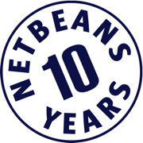
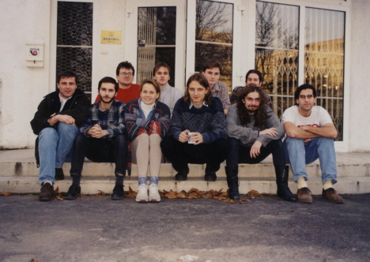
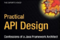
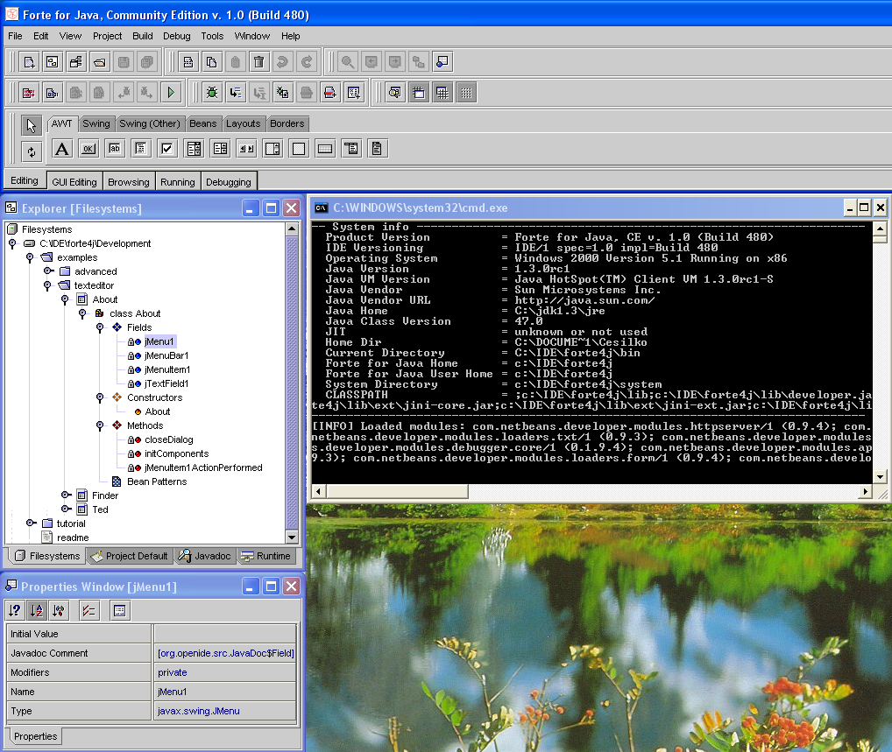

Since 1998, NetBeans has grown from a student project into an award
winning Open Source project, IDE and application platform. With
millions of downloads a year worldwide, the NetBeans community boasts
an active and diverse following of software developers, students,
instructors and partner companies. To celebrate the 10th milestone, we dedicated
a (October 20-27) to showcase some of the key initiatives and thank
the many dedicated individuals whose contributions have kept the NetBeans
momentum going strong.
|  |
Celebrate the NetBeans spirit
with the NetBeans
Decathlon! Ten interactive tasks for the NetBeans
community to show and share what the NetBeans Project means to them.
Collect points for each completed task for a chance to win a cool
limited edition NetBeans
T-shirt! Join... |
| To bring the NetBeans 10th birthday celebration to a close, we have a special interview with Sun CEO Jonathan Schwartz. He talks about why developers are important to Sun, looks back on how software development has changed over the last 10 years, and why NetBeans matters to Sun and the industry. And it turns out NetBeans and Jonathan have something in common...! Watch... |
|  |
It's been ten amazing years for NetBeans—from student project to budding start-up to renowned open source project. Meet some of the outstanding people who have helped along the way. Read... |
|  |
As part of NetBeans 10th Birthday Celebration and to promote his latest book, The API Book, NetBeans founder Jarda Tulach organized a contest to help improve users' API design skills. Read... |
| As their name implies, the NetBeans Evangelists deliver the "message" of NetBeans. They travel far and wide to conferences, user groups and institutions to demo our IDE and Platform and encourage adoption, and along the way have collected many memorable stories about life on the road as advocates of the NetBeans Project. One word to describe their part in the turnaround of the developer community's awareness of the NetBeans IDE? Priceless! Read... |
| The NetBeans Project has a huge following in Brazil. Former NetBeans Community Manager Bruno Souza and a handful of NetBeans fans gather together at a local restaurant to give NetBeans a hearty 10th birthday greeting Brazilian style! Watch... |
| Have you picked up any good books lately? As the NetBeans IDE and Platform have evolved and become popular so has the number of books about developing with them. This is a trend we like, and one that would not be possible without the hard work and enthusiasm of the authors, themselves avid NetBeans users and supporters of the project. Thanks to them, there is a NetBeans reference guide to match any number of development needs—from beginner to expert, JavaEE or RCP. View our collection of recent and past publications, and do consider adding a book to your library! Browse... |
| Since its inception in 2004,
NetCAT has established itself as a reliable avenue for testing the
quality of NetBeans releases, and has thus gained respect from NetBeans
Engineers and the NetBeans Community alike. The cool cats of this
program
have our thanks for their contribution in helping to send out a stable
NetBeans IDE year after year! Read... |
| Did you know that the NetBeans
logo was almost a bean? See the first hand-drawn drafts of the NetBeans
logo, and how it evolved over time to become the cube we all know and
love. Read... |
|  |
Do you recall what the Forte
screen looked like? The NetBeans user interface has changed over time.
Have a look at our collection of historic screenshots. And yes, it
dates back to Forte... Read... |
| The Community Docs team wants to
recognize the members that contributed to our database of tips and
tricks, screencasts, and expert tutorials. Read... |
| Birthday
greetings and reflections from the NetBeans team in Prague, Czech
Republic. This is
where it all started! Watch... |
|
If you develop with the NetBeans
IDE in Japanese or German; browse our website in Indonesian or
Albanian; read the NetBeans
Weekly newsletter in French or Brazilian Portuguese, there's one
group to thank—the NetBeans Localization team! This community-driven
team of translators has done an invaluable job of making the NetBeans
Project, in its many forms, available to non-English speaking
developers worldwide. For their great work, we say: Dekujeme, Gracias, Merci, Danke, Arigato
...! Read... |
| What better
way to kick off our
10th birthday bash than with a retrospective and birthday greeting from
the Godfather of Java, James
Gosling! Watch... |
| Over the years, the NetBeans IDE
has won awards and received positive reviews from the industry, but our
best endorsements still come from within the NetBeans community, from
developers who use our tool almost exclusively and encourage adoption
among other developers. The NetBeans
Dream Team is a group of super users who do just that and more. We
are proud to acknowledge their commitment to the NetBeans project. Read... |